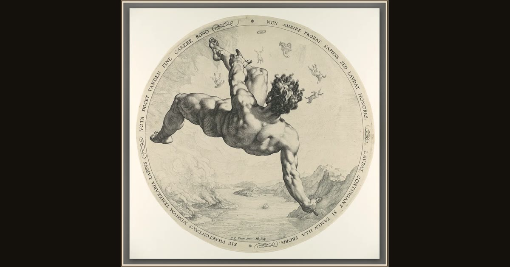

Phaeton, from "The Four Disgracers"
Hendrick Goltzius · 1588 · met
Goltzius’s engraving shows Phaethon tumbling headlong from the sky above a burning shore, the story the Egyptian priest reads as a memory of destruction by fire (22c) Explore its place in Plato's Dialogues, Timaeus, section 27.